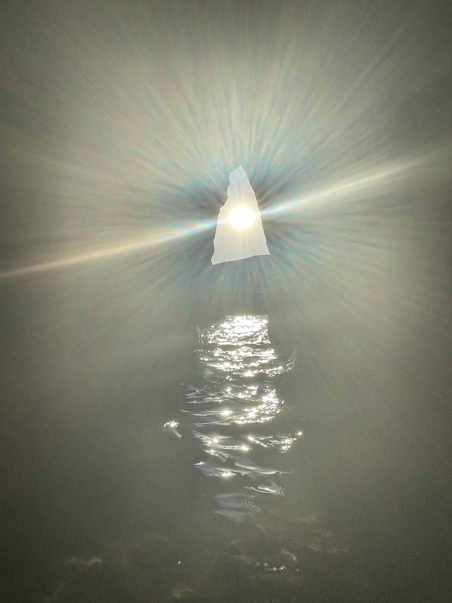

The Universe Winks
A moment when the sun aligned perfectly with the cave opening. A brief reminder that the universe whispers — softly — if we pay attention.

Aromatherapy
Essential oil vaporizer.
A moment when the sun aligned perfectly with the cave opening. A brief reminder that the universe whispers — softly — if we pay attention.
Essential oil vaporizer.